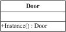
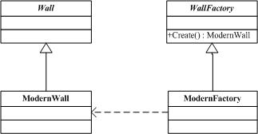

.NET设计模式（7）：创建型模式专题总结（Creational Pattern）
——.NET设计模式系列之七
Terrylee，2006年1月
概述
创建型模式，就是用来创建对象的模式，抽象了实例化的过程。它帮助一个系统独立于如何创建、组合和表示它的那些对象。本文对五种常用创建型模式进行了比较，通过一个游戏开发场景的例子来说该如何使用创建型模式。
为什么需要创建型模式
所有的创建型模式都有两个永恒的主旋律：第一，它们都将系统使用哪些具体类的信息封装起来；第二，它们隐藏了这些类的实例是如何被创建和组织的。外界对于这些对象只知道它们共同的接口，而不清楚其具体的实现细节。正因如此，创建型模式在创建什么（what），由谁（who）来创建，以及何时（when）创建这些方面，都为软件设计者提供了尽可能大的灵活性。
假定在一个游戏开发场景中，会用到一个现代风格房屋的对象，按照我们的一般想法，既然需要对象就创建一个：
ModernRoom room = new ModernRoom();
好了，现在现代风格房屋的对象已经有了，如果这时房屋的风格变化了，需要的是古典风格的房屋，修改一下：
ClassicalRoom room = new ClassicalRoom();
试想一下，在我们的程序中有多少处地方用到了这样的创建逻辑，而这里仅仅是房屋的风格变化了，就需要修改程序中所有的这样的语句。现在我们封装对象创建的逻辑，把对象的创建放在一个工厂方法中：
ModernFactory factory = new ModernFactory();
ModernRoom room = factory.Create();
当房屋的风格变化时，只需要修改
ClassicalFactory factory = new ClassicalFactory();
ClassicalRoom room = factory.Create();
而其它的用到room的地方仍然不变。这就是为什么需要创建型模式了。创建者模式作用可以概括为如下两点：
1．封装创建逻辑，绝不仅仅是new一个对象那么简单。
2．封装创建逻辑变化，客户代码尽量不修改，或尽量少修改。
常见的五种创建型模式
单件模式（Singleton Pattern）解决的是实体对象的个数问题，其他的都是解决new所带来的耦合关系问题。
工厂方法模式（Factory Pattern）在工厂方法中，工厂类成为了抽象类，其实际的创建工作将由其具体子类来完成。工厂方法的用意是定义一个创建产品对象的工厂接口，将实际创建工作推迟到子类中去，强调的是“单个对象”的变化。
抽象工厂模式（Abstract Factory）抽象工厂是所有工厂模式中最为抽象和最具有一般性的一种形态。抽象工厂可以向客户提供一个接口，使得客户可以在不必指定产品的具体类型的情况下，创建多个产品族中的产品对象，强调的是“系列对象”的变化。
生成器模式（Builder Pattern）把构造对象实例的逻辑移到了类的外部，在这个类的外部定义了这个类的构造逻辑。他把一个复杂对象的构造过程从对象的表示中分离出来。其直接效果是将一个复杂的对象简化为一个比较简单的目标对象。他强调的是产品的构造过程。
原型模式（Prototype Pattern）和工厂模式一样，同样对客户隐藏了对象创建工作，但是，与通过对一个类进行实例化来构造新对象不同的是，原型模式是通过拷贝一个现有对象生成新对象的。
如何选择使用创建型模式
继续考虑上面提到的游戏开发场景，假定在这个游戏场景中我们使用到的有墙（Wall），屋子（Room），门（Door）几个部件。在这个过程中，同样是对象的创建问题，但是会根据所要解决的问题不同而使用不同的创建型模式。
如果在游戏中，一个屋子只允许有一个门存在，那么这就是一个使用Signleton模式的例子，确保只有一个Door类的实例被创建。解决的是对象创建个数的问题。
 http://terrylee.cnblogs.com/images/cnblogs_com/terrylee/PIC081.jpg
示例代码：
using System;
public sealed class SigletonDoor
{
static readonly SigletonDoor instance=new SigletonDoor();
static SigletonDoor()
{
}
public static SigletonDoor Instance
{
get
{
return instance;
}
}
}
在游戏中需要创建墙，屋子的实例时，为了避免直接对构造器的调用而实例化类，这时就是工厂方法模式了，每一个部件都有它自己的工厂类。解决的是“单个对象”的需求变化问题。
 http://terrylee.cnblogs.com/images/cnblogs_com/terrylee/PIC082.jpg
示例代码：
using System;
public abstract class Wall
{
public abstract void Display();
}
public class ModernWall:Wall
{
public override void Display()
{
Console.WriteLine("ModernWall Builded");
}
}
public abstract class WallFactory
{
public abstract Wall Create();
}
public class ModernFactory:WallFactory
{
public override Wall Create()
{
return new ModernWall();;
}
}